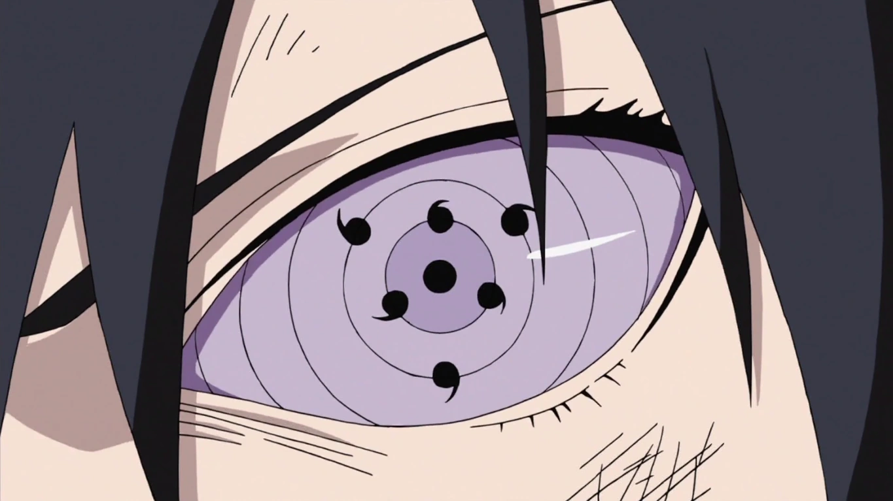

ㅤComeçar uma WikiㅤInícioㅤ•ㅤExplorarㅤ•ㅤMídiaㅤ•ㅤSérieㅤ•ㅤComunidadeㅤㅤㅤㅤㅤ ㅤㅤㅤㅤㅤㅤㅤㅤㅤㅤㅤㅤㅤㅤㅤㅤㅤㅤㅤㅤㅤㅤㅤㅤㅤㅤㅤㅤㅤㅤㅤㅤㅤㅤㅤㅤㅤㅤㅤㅤㅤㅤㅤㅤㅤㅤㅤㅤㅤㅤ
Descomplicando - O Rinnegan do Sasuke é Supremo? O "Rinnegan Supremo" tem sido um tema de constante debate entre os fãs e divide opiniões. Enquanto alguns afirmam que Sasuke possui o suposto "Rinnegan Supremo", que seria uma variante superior aos demais, outros afirmam que tal nomenclatura sequer existe e que foi inventada pelos fãs. Afinal, qual a verdade? Neste descomplicando estarei trazendo para vocês a origem deste termo para responder de uma vez por todas: o Rinnegan do Sasuke é supremo?  Por trás de todo mito há um fundo de verdade e nesse caso não é diferente. A expressão "Rinnegan Supremo" tem uma origem, na light novel A Verdadeira História de Sasuke: Alvorada. No capítulo 1, o narrador apresenta o protagonista da história, Sasuke Uchiha, e descreve sua aparência, o que inclui seu…
Após o lançamento de The Last: Naruto o Filme, o personagem Toneri Ōtsutsuki tem chamado a atenção da comunidade fãs devido ao uso de uma técnica de aparência similar às Esferas do Caminho da Verdade, que foram anteriormente utilizadas pelos jinchuuriki do Dez-Caudas. Há muitas controvérsias sobre o assunto, o que nos leva ao seguinte questionamento: Toneri realmente obteve as Esferas do Caminho da Verdade? Este Descomplicando tem como objetivo responder a essa pergunta de uma vez por todas, tomando como base informações fornecidas pelo filme e pela light novel onde Toneri é antagonista.
É inegável que em certos momentos do filme as esferas de Toneri apresentaram aparência praticamente idêntica às Esferas do Caminho da Verdade, com uma color…